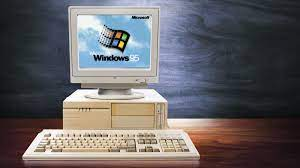

HISTORIA
La historia del mundo está plagada de luchas de poder épicas, tiranos que han conquistado el mundo y heroicas figuras ignoradas. La historia de los navegadores web no es muy diferente. Universitarios pioneros escribieron un software simple que inició una revolución de la información y una lucha por la superioridad de los navegadores y los usuarios de internet..
Antes de la era Web
En 1950, las computadoras ocupaban habitaciones enteras y eran más tontas que las calculadoras de bolsillo actuales. Pero el progreso fue rápido y en 1960 pudieron ejecutar programas complejos. Gobiernos y universidades de todo el mundo pensaron que sería fantástico si las máquinas pudieran hablar, favoreciendo la colaboración y los avances científicos.
La era web
El científico informático británico Tim Berners-Lee creó el primer servidor web y navegador web gráfico en 1990 mientras trabajaba en el CERN, la Organización Europea para la Investigación Nuclear, en Suiza. Llamó a su nueva ventana a Internet "WorldWideWeb". Era una interfaz gráfica fácil de usar creada para el ordenador NeXT. Por primera vez, los documentos de texto se enlazaron a través de una red pública — la web tal como la conocemos.
Las guerras de los navegadores
En 1995, Netscape Navigator no era la única forma de conectarse. El gigante de software Microsoft obtuvo la licencia del antiguo código Mosaic y construyó su propia ventana a la web, Internet Explorer. El lanzamiento inició una guerra. Netscape y Microsoft trabajaron febrilmente para crear nuevas versiones de sus programas, cada uno intentando superar al otro con productos mejores y más rápidos.
